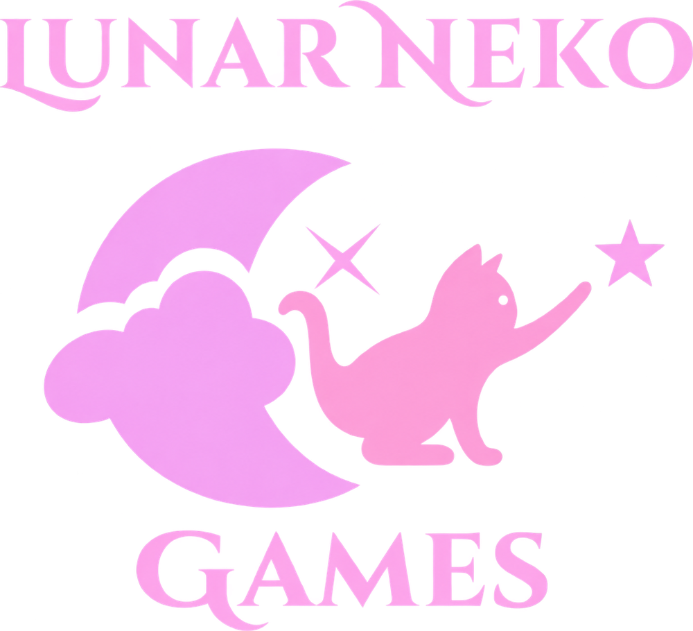

Games
Jogos indie aconchegantes e cheios de charme, com atmosfera, arte cuidadosa e mecânicas que dá vontade de jogar só mais uma vez.
Games e Software
Pequenos mundos feitos à mão, sob a luz da lua.
✦ Sobre
A Lunar Neko nasceu da vontade de criar coisas bonitas e divertidas: jogos com personalidade e ferramentas que facilitam a vida. Cada projeto é feito com cuidado, atenção aos detalhes e um pouquinho de magia noturna.
Aqui você acompanha tudo o que estamos construindo, dos primeiros rascunhos aos lançamentos.
✦ Projetos
Jogos e softwares da Lunar Neko. Novas estrelas aparecem por aqui em breve.
✦ O que fazemos
Jogos indie aconchegantes e cheios de charme, com atmosfera, arte cuidadosa e mecânicas que dá vontade de jogar só mais uma vez.
Ferramentas e aplicativos práticos, bonitos e fáceis de usar, feitos para resolver problemas reais sem complicação.

Quer saber mais sobre algum projeto, acompanhar as novidades ou só dar um oi? Vem pra nossa comunidade, a lua está sempre acordada.